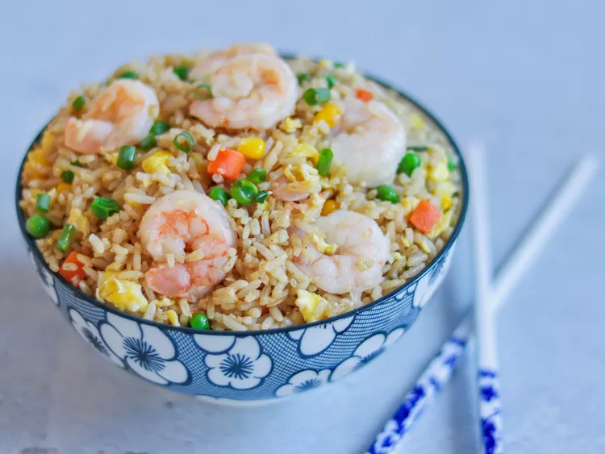

Home
Shrimp Fried Rice Recipe

Description
This shrimp fried rice recipe is the best you will ever find. Eating this shrimp fried rice is like eating a slice of warm sun on a spring day. It contains bright refreshing notes and is a well balanced, yummy, filling and affordable meal to feed you and your family. If you are the only one eating it, no worries! This meal also keeps well in the fridge for a few days.
Ingredients
- One pound of peeled devained shrimp.
- 5 cloves of garlic
- 1 1/2 tablespoons of ginger
- 5 green onions
- 2 eggs
- Leftover rice
- Olive oil
- MSG
- 2 tablespoons of soy sauce
- 2 tablespoons of mirin
Steps
- First wash and dry your shrimp.
- Mince all of your garlic and ginger.
- Slice your green onion. Separate the greens from the whites.
- Put your pan on medium heat. Add oil and then your garlic, ginger, whites of the green onion, and shrimp.
- Sautee for 2 minutes then remove from the pan.
- Add oil to the pan. Add eggs and scramble.
- Once eggs are cooked, add rice, oil, msg, soy sauce and mirin. Cook for 2 minutes
- Return the shrimp and toss.
- Serve on a plate and add the greens of the onions on top to be fancy. Enjoy!